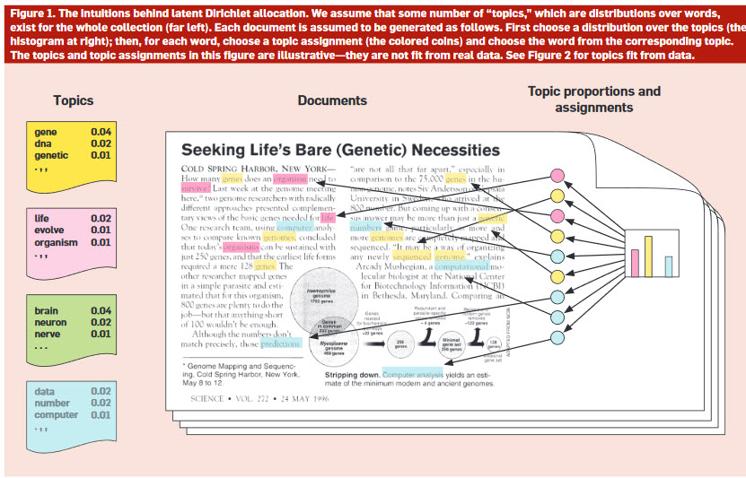
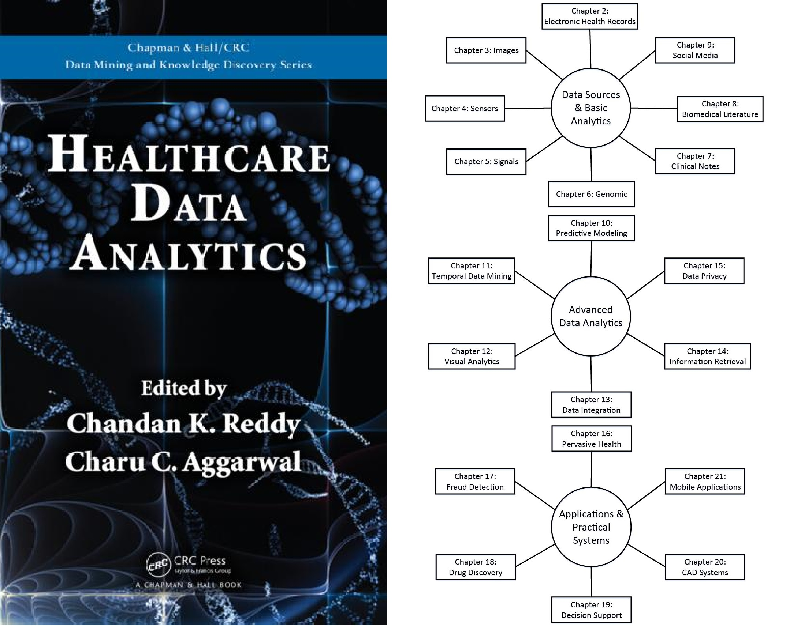
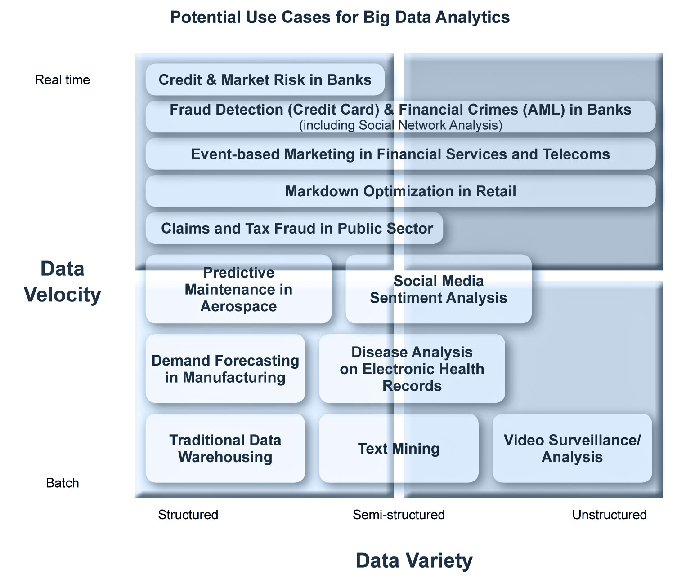
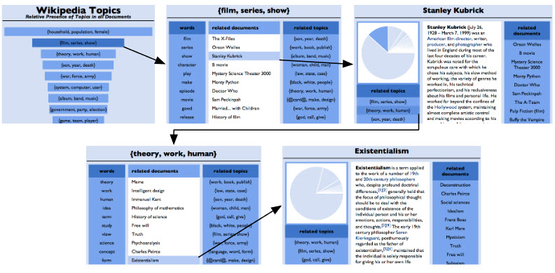
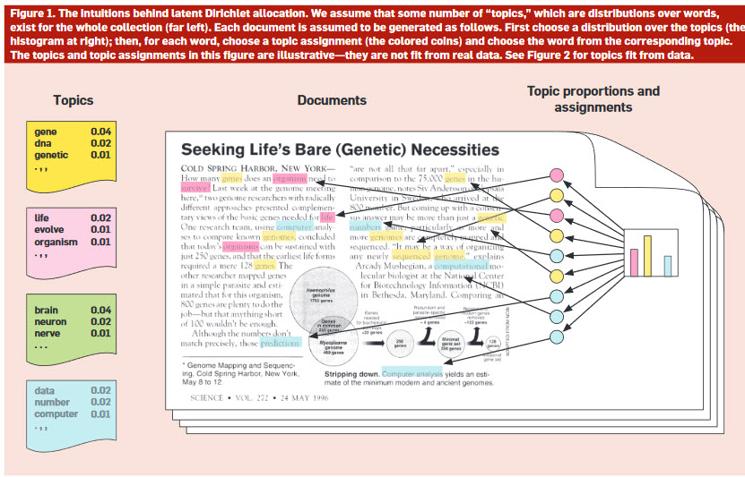
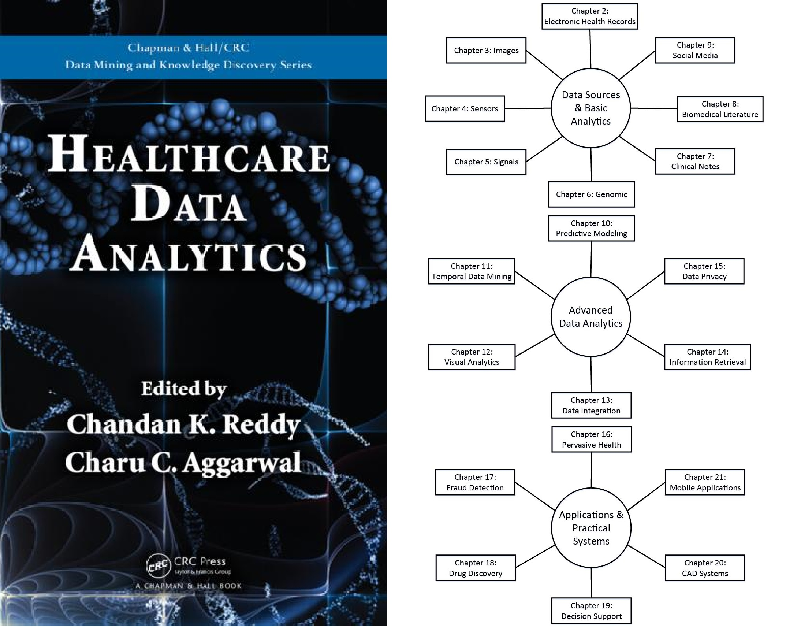
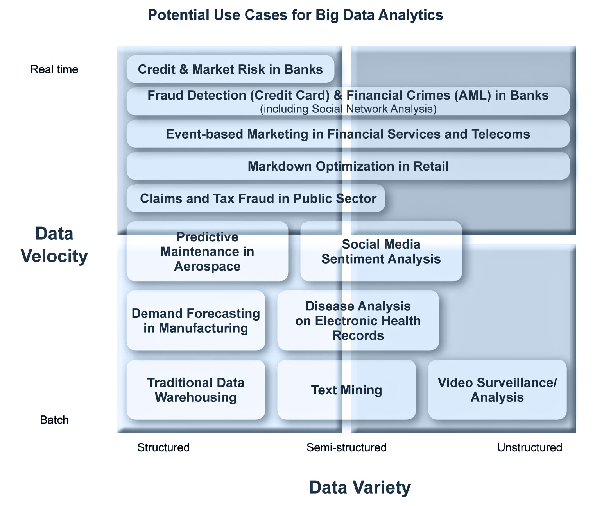
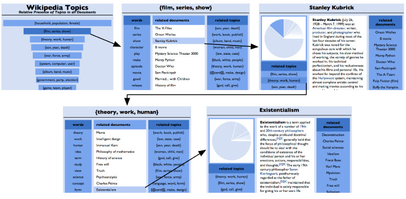

Goal was to learn Data Science and Machine Learning but at the same get a lot of hands on training in the course work.
The following classes so far did a good job with hands on training:
 







Like to explore D3 Visualization more. This seems to be invaluable tool when discussing with Senior Management the problems and solutions to a Data Science problem.
I am excited that this Data Visualization section decided to focus more on D3 Visualization and bypass C++.
Click on each image to learn more.